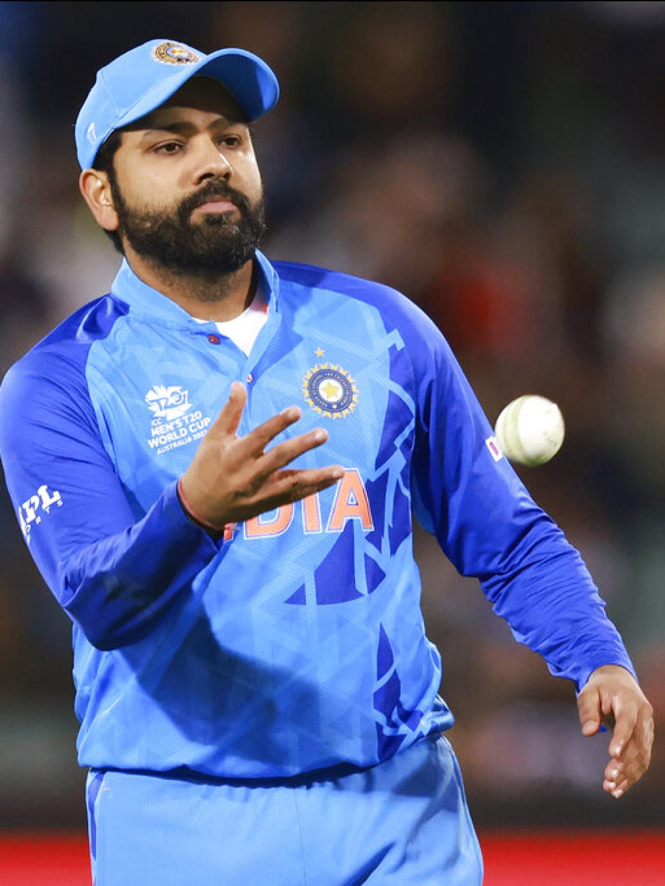

| Image |
Name |
Information |

|
Virat Kohli |
Personal information
Born 5 November 1988 (age 34)
Delhi, India
Nickname Cheeku[1]
Height 5 ft 9 in (175 cm)[2]
Batting Right-handed
Bowling Right-arm medium
Role Top-order batter
Relations Anushka Sharma(wife) |
|

|
Rohit Sharma |
Born: 30 April 1987 (age 35 years), Nagpur
Spouse: Ritika Sajdeh (m. 2015)
Height: 1.7 m
Parents: Gurunath Sharma, Purnima Sharma
Batting style: Right-handed
Dates joined: 2011 (Mumbai Indians), MORE
Siblings: Vishal Sharma |

|
Hardik Pandya |
Born: 11 October 1993 (age 29 years), Choryasi
Spouse: Nataša Stanković (m. 2020)
Height: 1.83 m
Siblings: Krunal Pandya
Education: Mk High School
Parents: Himanshu Pandya, Nalini Pandya
Batting style: Right-handed |